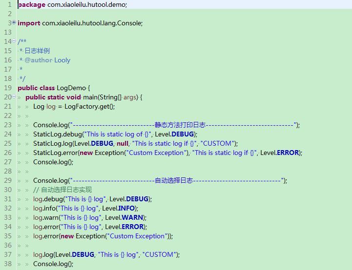

Hutool是一个工具包，我日常写项目的一些积累，广泛学习其它开源项目精髓，经过自己整理修改，希望你看了之后会有所启发或者能给你工作中带来帮助。说实话我现在写代码已经离不开自己这个工具包了，叫做Hutool也有“糊涂”之意，表示很多功能糊里糊涂就实现了。好吧，言归正传，说说里面一些好玩的方法（工具包中大部分是一些静态方法）。
- Web开发
- 与其它框架无耦合
- 高度可替换
Hutool的设计思想是尽量减少重复的定义，让项目中的util这个package尽量少，总的来说有如下的几个思想：
- 减少代码录入。
- 用一个方法解决一个问题。
- ActiveRecord思想(针对DB模块)
- 做工具而不是框架，用完即走，高度可替代，随时剔除。
在项目的pom.xml的dependencies中加入以下内容:
<dependency>
<groupId>com.xiaoleilu</groupId>
<artifactId>hutool</artifactId>
<version>X.X.X</version>
</dependency>

Hutool 是什么
Hutool是一个Java工具包类库，对文件、流、加密解密、转码、正则、线程、XML等JDK方法进行封装，组成各种Util工具类
日期工具
通过DateUtil类，提供高度便捷的日期访问、处理和转换方式。
HTTP客户端
通过HttpUtil对HTTP客户端的封装，实现便捷的HTTP请求，并简化文件上传操作。
转换工具
通过Convert类中的相应静态方法，提供一整套的类型转换解决方案，并通过ConverterRegistry工厂类自定义转换。
配置文件工具（Setting）
通过Setting对象，提供兼容Properties文件的更加强大的配置文件工具，用于解决中文、分组等JDK配置文件存在的诸多问题。
日志工具
Hutool的日志功能，通过抽象Log接口，提供对Slf4j、LogBack、Log4j、JDK-Logging的全面兼容支持。
JDBC工具类（DB模块）
通过db模块，提供对MySQL、Oracle等关系型数据库的JDBC封装，借助ActiveRecord思想，大大简化数据库操作。
关于我

Golden Looly
二手Java码农，Python和前端爱好者
一个非正常的码农，混迹于非IT圈子，利用8小时之外做自己喜欢的事情，爱前端，爱数码，爱美女。
加入讨论
通过以下方式加入讨论